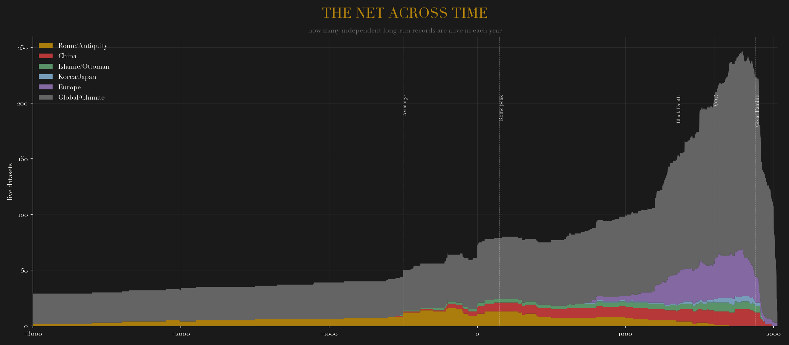
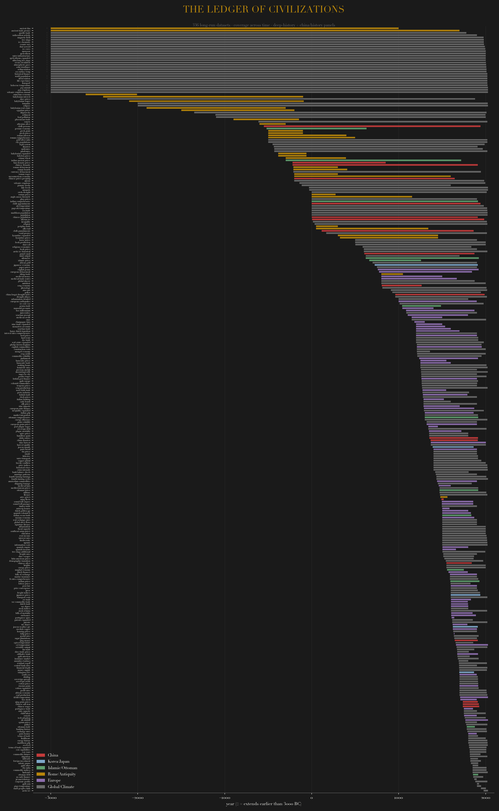

Every year, counted: how many independent long-run records are alive. The net thickens from ~30 strands in the Bronze Age (climate proxies, Babylonian tablets) to ~250 by the nineteenth century, then thins as series terminate at their publication edges. Structured institutional text — court chronicles, trial records, toll registers — joins the climate backbone from the medieval period onward.

Each strip is one dataset, sorted by start year: the waterfall from ice cores and tree rings (top, clamped at 3000 BC) through Babylonian prices, Roman debasement, the Chinese dynastic ledger, and into the dense European early-modern record. Gold = antiquity · red = China · blue = Korea/Japan · green = Islamic/Ottoman · purple = Europe · grey = global/climate.

Rose: history.panel.map.001 (master index) → history.panel.catalog.001 (this catalog) + annual maps for Old Bailey, Sound Toll, Joseon, SJW weather, and the china.panel.* family. Raw corpora local: ~/china-panel (9.9 GB), ~/history-panel (7.5 GB), ~/vitalic.stoicism/data/from_deep_history. Related: deep_history · vitalic stoicism